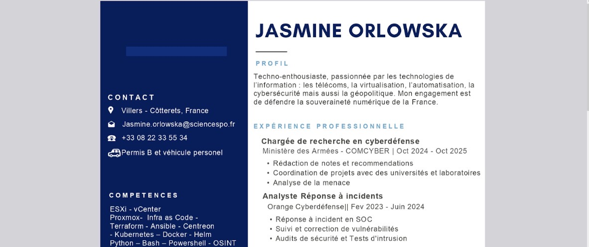
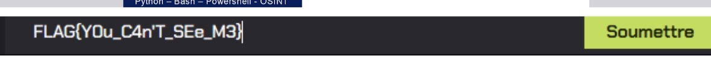
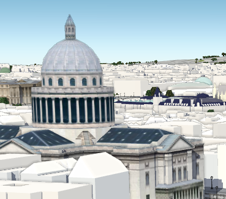
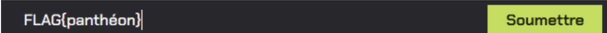
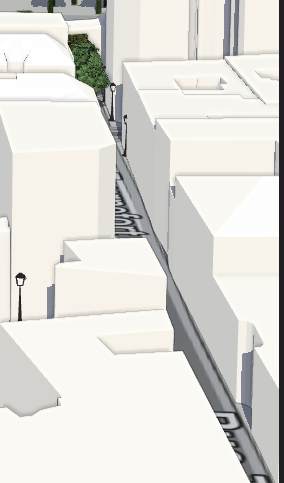
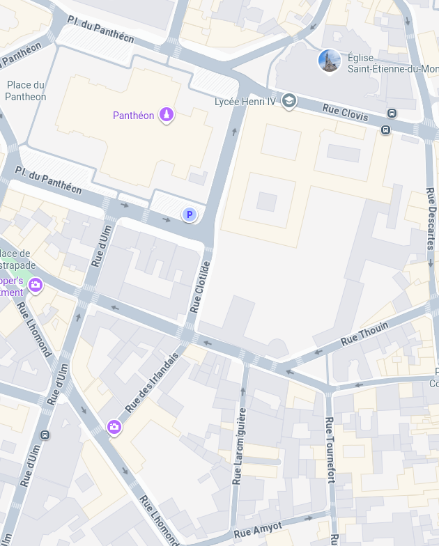
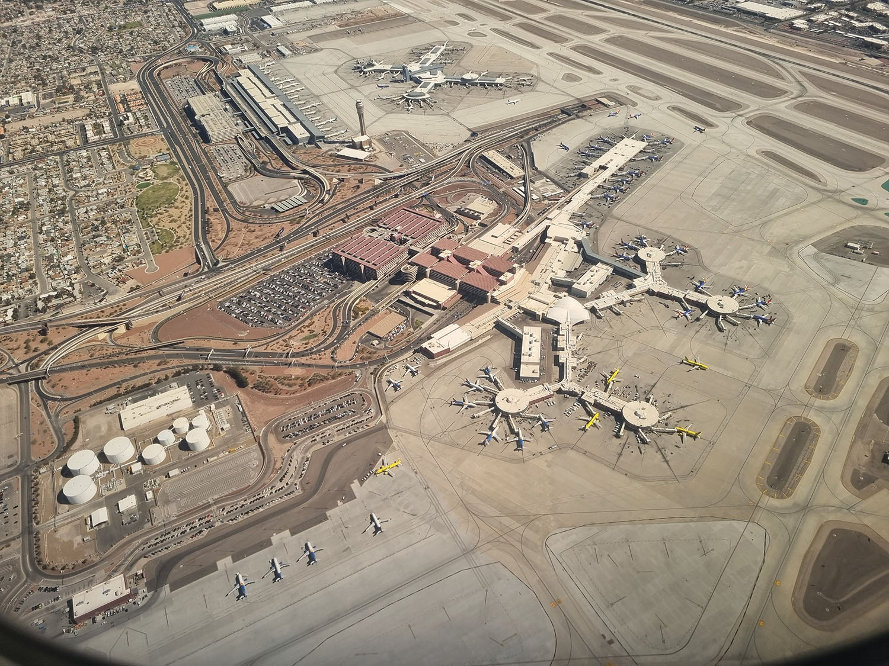

Problématique : La Recrue
Énoncé / Descriptif
Dans ce défi, il était demandé de trouver un flag caché dans un CV au format PDF.
Pour ce faire, il était nécessaire d'utiliser la combinaison de touches Ctrl + A
afin de sélectionner tout le texte, y compris le texte caché, puis de copier et coller le flag sur la plateforme.
Résolution
- Ouvrir le fichier PDF du CV.
- Appuyer sur
Ctrl + Apour sélectionner tout le texte, y compris le texte caché. - Copier le texte sélectionné.
- Coller le texte dans un éditeur de texte pour identifier le flag.
- Soumettre le flag
FLAG{You_C4n'T_SeE_M3}sur la plateforme.
Outil(s) / Ressource(s) utilisé(s)
- Un lecteur PDF (Adobe Acrobat Reader, Foxit Reader, etc.).
- Un éditeur de texte (Notepad, VS Code, etc.).
Difficulté(s) rencontrée(s)
Au début, je n'ai pas pensé à utiliser Ctrl + A pour révéler le texte caché.
J'ai d'abord essayé de lire le PDF normalement, sans succès.
Ce que j’ai appris
- Les fichiers PDF peuvent contenir du texte caché.
- L'utilisation de
Ctrl + Apeut révéler des informations invisibles à l'œil nu. - Il est important de tester différentes méthodes pour accéder aux informations cachées.
Captures d’écran

Ctrl + A.

FLAG{You_C4n'T_SeE_M3} soumis sur la plateforme.
Problématique : Le Repaire - Partie 1
Énoncé / Descriptif
Dans ce défi, il était demandé d'identifier une base de pirates à l'aide d'une modélisation 3D de Paris. Nous devions trouver le bâtiment situé à gauche de l'image fournie. Il s'agissait du Panthéon, ce qui a permis d'obtenir le flag.
Résolution
- Analyser la modélisation 3D de Paris pour identifier les bâtiments caractéristiques.
- Repérer le bâtiment de gauche sur l'image.
- Reconnaître le Panthéon grâce à son architecture distinctive (dôme, colonnes).
- Soumettre le flag
FLAG{panthéon}sur la plateforme.
Outil(s) / Ressource(s) utilisé(s)
- Modélisation 3D de Paris (fichier ou logiciel de visualisation 3D).
- Connaissances en architecture parisienne.
Difficulté(s) rencontrée(s)
Au début, il était difficile de distinguer les détails architecturaux sur la modélisation 3D. J'ai dû zoomer et analyser attentivement chaque bâtiment pour identifier le Panthéon.
Ce que j’ai appris
- L'importance de connaître les monuments emblématiques pour résoudre des énigmes visuelles.
- L'utilisation de la modélisation 3D pour identifier des lieux réels.
- La patience et la persévérance pour analyser des détails complexes.
Captures d’écran


FLAG{panthéon} soumis sur la plateforme.
Problématique : Le Repaire - Partie 2
Énoncé / Descriptif
Pour ce défi, il était demandé de trouver un nom de rue à moitié identifiable sur une partie zoomée de la modélisation 3D précédente. On pouvait identifier un nom de rue commençant par "T" et finissant par "fort". Il suffisait de chercher un nom de rue similaire sur Google Maps proche du Panthéon.
Résolution
- Analyser la partie zoomée de la modélisation 3D pour repérer les indices sur le nom de la rue.
- Identifier que le nom de la rue commence par "T" et finit par "fort".
- Rechercher sur Google Maps les rues proches du Panthéon qui correspondent à ce motif.
- Trouver la rue "Tournefort" qui correspondait aux critères.
- Soumettre le flag
FLAG{rue_tournefort}sur la plateforme.
Outil(s) / Ressource(s) utilisé(s)
- Modélisation 3D de Paris.
- Google Maps.
Difficulté(s) rencontrée(s)
La difficulté principale était de bien distinguer les lettres sur la modélisation 3D, car elles étaient partiellement visibles. Il a fallu faire preuve de logique et de déduction pour identifier le nom de la rue.
Ce que j’ai appris
- L'importance de l'observation minutieuse pour repérer des détails dans une image.
- L'utilisation de Google Maps pour valider des hypothèses sur des lieux réels.
- La capacité à déduire des informations à partir d'indices partiels.
Captures d’écran


Problématique : La Traque - Partie 1
Énoncé / Descriptif
Dans ce défi, il était demandé d'identifier la piste d'un aéroport provenant d'une ville inconnue.
Le flag devait être écrit sous la forme : FLAG{trigramme_de_l'aéroport:nom_de_la_piste}.
Pour résoudre ce challenge, il fallait d'abord identifier la ville et l'aéroport, puis déterminer la piste exacte.
Résolution
- Analyser la vidéo du décollage depuis l'aéroport pour identifier des indices visuels (bâtiments, paysages, etc.).
- Utiliser Internet pour identifier la ville et l'aéroport : il s'agissait de Las Vegas, avec le trigramme
LAS. - Utiliser une IA ou une recherche en ligne pour lister toutes les pistes de l'aéroport de Las Vegas.
- Tester chaque combinaison possible pour le flag.
- Soumettre le flag
FLAG{LAS:26R}sur la plateforme.
Outil(s) / Ressource(s) utilisé(s)
- Internet (recherche d'images et d'informations sur les aéroports).
- IA ou outils en ligne pour lister les pistes de l'aéroport.
Difficulté(s) rencontrée(s)
La difficulté principale était d'identifier la ville et l'aéroport à partir d'une vidéo. Ensuite, il fallait être méthodique pour tester chaque combinaison de piste afin de trouver la bonne.
Ce que j’ai appris
- L'importance de l'analyse visuelle pour identifier des lieux à partir d'images.
- L'utilisation d'outils en ligne et d'IA pour compléter des informations manquantes.
- La persévérance et la méthode pour tester différentes combinaisons.
Captures d’écran

